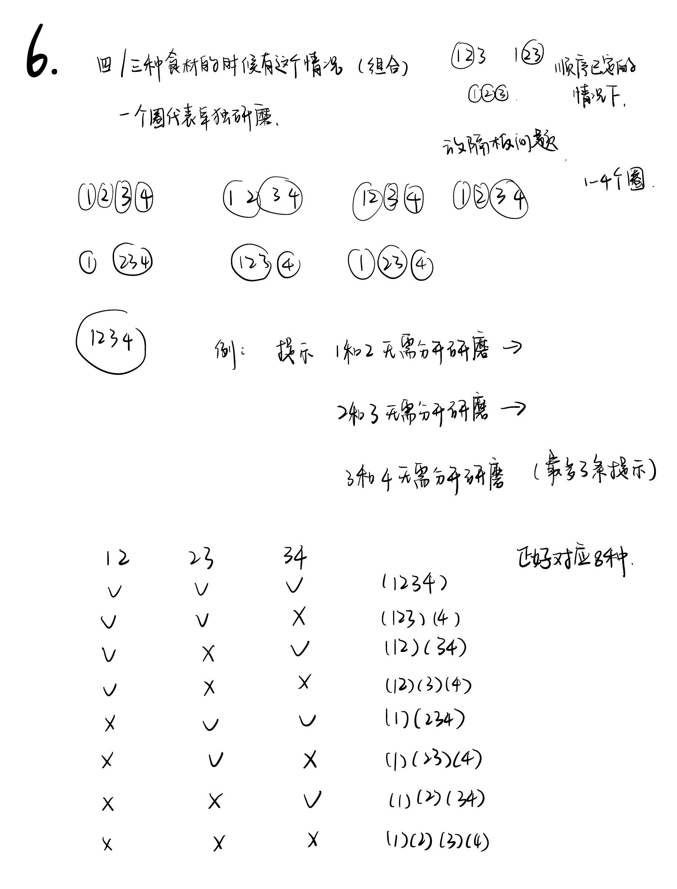

Discover发现
Discover ingredient properties, unlock clues, and understand how ingredients affect one another as the grandmother searches for flavors she remembers.跟随奶奶寻找记忆中的味道，发现食材特性、解锁线索，理解食材之间的关系。
Reconstruct Cantonese recipes through trial and error. 通过尝试，还原广式配方。
A 3D Recipe Puzzle Game一款 3D 配方解谜游戏
Players experience the journey from the grandmother's point of view, travelling through cities across Guangdong to search for the Cantonese recipes she remembers from childhood. The ingredients are still known, but the correct methods have been lost. 玩家将以奶奶的视角展开旅程，跟随她走访广东的不同城市，寻找童年记忆中的广式配方。食材仍有记录，但正确的制作方法已经失传。
Project Introduction项目介绍
Each level supplies a fixed set of ingredients. Players work out how to prepare them.每关提供固定的食材，制作方法需要玩家自己找出来。
The Taste Reviver follows a grandmother as she travels through Guangdong, tracing childhood memories of local food to recover familiar recipes. In each city, she encounters a dish she once knew. Only the ingredient names remain; the order of addition, proportions, and how to grind and prepare them have been forgotten. 《味觉复原师》以奶奶的视角展开。她循着童年对食物的记忆，走访广东的不同城市，寻找还原老配方的线索。每到一座城市，她都会遇见一道曾经熟悉的特色菜。然而，配方只留下了食材的名字：先放什么、各放多少、怎样研磨、如何掌握制作节奏，都需要重新摸索。
The player works with ingredients supplied by each level, tests their preparation, and uses feedback and unlocked clues to reconstruct the missing method. The larger story connects these recipe puzzles to the grandmother and her remembered flavors.每关提供指定食材，玩家通过尝试处理方式、读取反馈与解锁线索，逐步还原缺失的方法。整体故事则将这些配方谜题与奶奶及她记忆中的味道联系起来。
In each city, players encounter a local specialty.每到一座城市，玩家都会遇到一道当地特色菜。
The grandmother travels across Guangdong looking for food she remembers. Each recipe puzzle is part of that trip.奶奶走访广东，寻找记忆中的食物。玩家在旅途中逐关还原配方。
Discover ingredient properties, unlock clues, and understand how ingredients affect one another as the grandmother searches for flavors she remembers.跟随奶奶寻找记忆中的味道，发现食材特性、解锁线索，理解食材之间的关系。
Use the supplied ingredients and test force, speed, order, batch grouping, and proportion.使用关卡指定的食材，探索力度、速度、加入顺序、研磨分批和比例。
Use real-time grinding feedback and earlier records to reconstruct the preparation method, recover the recipe, and carry ingredient knowledge into the next city.结合研磨时的实时反馈与先前记录，逐步复原制作方法，找回熟悉的配方，并把学到的食材知识带往下一座城市。
I missed the food my family made.我想念家里人做的饭。
While studying in the United States, I missed the food of home, especially meals made by my family. Some flavors from my childhood are also becoming harder to find. Few people still make those foods, and the versions I remember live on mostly in my family's cooking.在美国留学时，我很想念家乡的美食，尤其是家里人做的饭。有些小时候常吃的食物，如今已经很少有人会做；记忆里的那口味道，往往只有在家里才能尝到。
I wanted to turn the process of recovering familiar recipes and rediscovering how to make them into a game. Through that process, I hope players can share something of the longing for home that a familiar taste can hold.我想把寻找熟悉的配方、一点点还原做法的过程做成游戏，让玩家在找回一道道味道的过程中，也能感受到我们对家乡的思念。
Gameplay & Levels玩法与关卡
Set the force, control speed with the mouse, and explore order, batch grouping, and proportion.确定力度、用鼠标控制速度，再探索加入顺序、研磨分批和比例。
The game takes place at a wooden worktable with a mortar, a stone pestle, and the ingredients required for the current recipe. Players set the grinding force and move the pestle with the mouse to control speed. They also decide the order of addition, which ingredients should be ground together or separately, and how much of each ingredient to use. 游戏画面集中在一张木质工作台上，桌面摆放着研钵、石杵，以及当前配方所需的食材。玩家通过滑条确定力度，用鼠标亲手拖动石杵来控制研磨速度；同时需要拖放食材，决定加入顺序、哪些食材一起研磨或分批处理，以及每种食材的用量。
The force slider provides Light, Medium, and Heavy settings. Mouse movement of the pestle is classified as Fast, Medium, or Slow grinding. Order, batch grouping, and proportion are the other three evaluation dimensions. Each level states in advance which dimensions it checks.力度滑条提供轻、中、重三档，鼠标拖动石杵的速度被识别为快、中、慢三档研磨速度。加入顺序、研磨分批和比例是另外三个判定维度，每关会提前说明当前考察哪些维度。
Because the correct recipe is not revealed, players use each attempt to learn more about how the ingredients should be prepared. An experiment may use the right ingredients but fail because the proportions are wrong, an ingredient was added too early, or ingredients that should be processed separately were ground together. 由于正确配方不会被公开，玩家需要从每次尝试中寻找处理食材的线索。一次实验可能使用了正确食材，却因为比例不对、某种食材加入过早，或本应分开处理的食材被一起研磨而失败。
Read the ingredient traits and make an initial judgment about how each ingredient should be prepared.先阅读食材特性，初步判断每种食材需要怎样处理。
Experiment repeatedly, adjusting force, speed, order, batch grouping, and proportion in response to feedback.不断实验，根据反馈调整力度、速度、加入顺序、研磨分批和比例。
Record each result in the Experiment Log. Once the entire recipe is correct, unlock clues about its ingredients and apply that knowledge in later experiments.在实验日志中记录每次结果。配方完全正确后，解锁当前食材的线索，并将这些知识用于后续实验。
Opening every variable at once would leave too many combinations to try.如果同时开放所有维度，玩家需要尝试的组合会太多。
Each level brings these decisions into one space and supplies a fixed set of ingredients. Players choose amounts, plan preparation, and move the pestle with the mouse to control grinding speed.每个关卡把这些决策集中在同一个空间。食材由关卡指定，玩家可以选择用量、安排处理过程，再用鼠标操作研磨杵，控制研磨速度。
| Dimension维度 | What it determines决定什么 | Player action玩家如何操作 |
|---|---|---|
| Force力度 | How strongly a batch is ground.每一批研磨时施加的力度。 | Set the pressure slider to Light, Medium, or Heavy.通过力度滑条选择轻、中、重。 |
| Speed速度 | How quickly the pestle moves.石杵移动的快慢。 | Move the mouse at a Slow, Medium, or Fast pace.通过鼠标移动控制慢、中、快三档节奏。 |
| Order加入顺序 | Which ingredient enters the mortar first.哪种食材先进入研钵。 | Drag ingredients into the mortar in sequence.按顺序将食材拖入研钵。 |
| Batch Grouping · 研磨批次 | Which ingredients are processed together or separately.哪些食材共同处理，哪些分开处理。 | Press New Batch to begin a separate processing group.按 New Batch 开始新的处理批次。 |
| Proportion比例 | How much of each ingredient is used.每种食材的用量。 | Choose an amount for each ingredient.选择每种食材的用量档位。 |
Order determines what comes first. Batch grouping determines what is ground together. In L12, Douchi and Ginger share a batch, while Scallion Stem and Coarse Salt are processed separately. New Batch marks the boundaries between these groups.顺序决定先放什么，分批决定哪些一起研磨。在 L12 中，豆豉和姜共同处理，葱茎与粗盐则分别处理。New Batch 操作明确了各组之间的边界。
Batch 01
Processed together共同处理
Batch 02
Processed separately单独处理
Batch 03
A separate final batch独立的最后一批
To understand the cost of unrestricted experimentation, I estimated the configurations for four distinct ingredients, each used exactly once. This model preserves the order of addition and allows each batch its own force and speed settings. Proportion is held fixed.为了判断完全开放的试错成本，我估算了四种不同食材各使用一次时的操作配置数。这里保留食材的加入顺序，每批独立选择力度与速度，暂时固定比例。
| Dimension维度 | Choices可选方式 | Count数量 |
|---|---|---|
| Force力度 | Light / Medium / Heavy | 3 per batch每批 3 种 |
| Speed速度 | Slow / Medium / Fast | 3 per batch; 9 force–speed pairs每批 3 种；力度与速度共 9 种搭配 |
| Order食材顺序 | Arrange all four ingredients.四种食材全部排列。 | 4! = 24 |
| Batch grouping研磨分批 | For a fixed order, split or join at each of three gaps. This includes one batch of four, two pairs, a group of three plus one, and four separate batches.固定顺序后，三个间隔各自选择分开或合并；包含四种一起、两两一批、三种一批加一种单独处理，以及全部单独处理等方式。 | 2³ = 8 per order每个顺序 2³ = 8 种 |
| Batches批次数 | Calculation计算方式 | Configurations操作配置数 |
|---|---|---|
| 1 | 24 × 1 × 9 | 216 |
| 2 | 24 × 3 × 9² | 5,832 |
| 3 | 24 × 3 × 9³ | 52,488 |
| 4 | 24 × 1 × 9⁴ | 157,464 |
| Total总计 | 216 + 5,832 + 52,488 + 157,464 | 216,000 |
The factors 1 / 3 / 3 / 1 count ways to place batch boundaries for each fixed ingredient order. Order and grouping are counted together to avoid duplication. These are distinct action configurations under the stated assumptions, not necessarily distinct evaluated outcomes. Proportion choices would expand the space further.1 / 3 / 3 / 1 表示每个固定顺序下各批次数的边界设置方式。顺序与分批联合计算，避免重复计数。这是上述假设下不同操作配置的数量，不一定对应同样多种判定结果；如果再开放比例，范围还会进一步扩大。
The number of combinations led me to add feedback during grinding, so players could adjust before completing an attempt. The current version includes warnings for excessive force and speed, such as a burnt smell when the force is too heavy.看到这么多组合后，我加入了研磨过程中的实时反馈，让玩家不用等整次实验结束，就能发现需要调整的地方。目前已加入力度过重和速度过快时的提示，例如力度过重时出现烧焦气味的提示。
Further additions could signal insufficient force or speed, for example through a message about large particles remaining. Ingredient-hover descriptions already introduce each ingredient; they could be expanded with more specific preparation clues for the current level. These extensions remain proposed additions.后续还可以补充力度不足、速度过慢时的反馈，例如提示仍有较大颗粒；现有的鼠标悬停介绍也可以扩展为与当前关卡处理方法有关的更具体线索。这些扩展属于后续设想，与目前已实现的提示分开说明。
A burnt smell means the force is too heavy; little aroma means it is too light. Together with the current force setting, these messages let players rule out choices. For example, a burnt smell at Heavy leaves Light or Medium; at Medium, it points to Light. Little aroma at Medium points to Heavy.烧焦的气味表示力度过重，香味还没有散发出来表示力度过轻。玩家结合当前档位，就能排除一些选择：重档出现焦味，还剩轻、中两档；中档出现焦味，就可以判断应改为轻档；中档提示香味未散发，则应改为重档。
Even a small cue can help players rule out ineffective choices. As these cues accumulate across batches, they can substantially narrow the combinations players need to consider, reducing the cost of blind trial and error.一个小小的提示，就能帮助玩家排除一些无效选择。当这些线索在不同批次中逐步积累时，需要考虑的组合也会大幅减少，从而降低盲目试错的成本。
| Information available for each batch每批获得的信息 | Force choices left剩余力度 | Force × speed per batch每批力度 × 速度组合 | Total configurations总操作组合 |
|---|---|---|---|
| No force choice excluded尚未排除力度档位 | 3 | 3 × 3 = 9 | 216,000 |
| Heavy produces a burnt smell, or Light produces little aroma重档出现焦味，或轻档香味未散发 | 2 | 2 × 3 = 6 | 49,392 |
| Medium produces a burnt smell or little aroma中档出现焦味或香味未散发 | 1 | 1 × 3 = 3 | 4,608 |
Conditional estimates using the earlier four-ingredient model: each ingredient is used once, proportion is fixed, and all orders and batch groupings remain open. If each batch has q force–speed choices, the total is 24 × (q + 3q² + 3q³ + q⁴). Each row assumes equally informative feedback is available for every batch in every candidate grouping, with one correct force setting and a reliable direction of error. Feedback must be obtained during play and can change with ingredient combinations; a single message does not immediately reduce the entire game to the number shown. These counts describe remaining configurations under those assumptions, not failed attempts or measured player performance.这是沿用前面四种食材模型的条件估算：每种食材使用一次，比例固定，加入顺序与分批方式仍全部开放。每批若剩 q 种力度与速度组合，总数为 24 ×（q＋3q²＋3q³＋q⁴）。每行假设所有候选分组中的每一批，都已获得同等程度的反馈，且每批只有一个正确力度，反馈能可靠指出偏重或偏轻。反馈需要在操作中获得，也会随食材搭配改变；不能把一次提示理解为整个游戏立即缩减到表中的数量。这里计算的是假设条件下剩余的操作组合，不是失败次数或玩家实测结果。
The first seven levels serve as tutorials, each focusing on a limited number of dimensions. Players learn how to operate and evaluate each dimension before combining more of them in later levels. Along the way, they become familiar with ingredients and collect clues they can reuse in more complex recipes.前七关作为教学关，每关只考察少量维度，让玩家逐步理解各个维度如何操作、如何判断，再进入多维度结合的关卡。玩家也会在这个过程中认识食材、收集线索，为后续更复杂的配方积累依据。
A dedicated Experiment Log Practice level requires players to open the log and retrieve clues they have already collected. It teaches them to consult earlier records when working on a new recipe.专门设置的 Experiment Log Practice 要求玩家打开实验日志，找回先前获得的线索，让玩家学会在遇到新配方时主动回查记录。
The final level tests whether players can retrieve clues from earlier levels and combine them to find the correct preparation method. It provides no new hints; the solution depends on what players have already learned and recorded.最后一关考验玩家能否从前面的关卡中找回线索，并将它们结合起来，推导出正确的制作方法。本关不提供任何新提示，答案需要从已经学到并记录的知识中找到。
On entering a level, players can explore the panel's buttons, see which dimensions the level checks, and open Ingredient Traits to read about the supplied ingredients. Level 1 checks force alone. Its rice description contains a clue to use Medium force, encouraging players to base their first judgment on ingredient information.进入关卡后，玩家可以先探索面板上的按钮，了解这一关考察哪些维度，并点开 Ingredient Traits，查看当前食材的介绍。第一关只考察力度，大米的介绍中就包含使用中等力度的线索，让玩家先尝试根据食材信息判断处理方法。
Force and speed each have three settings. Players use the clues to choose a force setting, then move the pestle with the mouse to try it out. As later levels introduce speed and other dimensions, players need to combine more information to make their decisions.力度和速度各有三档。玩家根据线索选择力度，再用鼠标控制研磨杵进行尝试。随着后续关卡引入速度等其他维度，玩家需要结合更多信息作出判断。
After an experiment, the Hint Panel gives an overall Correct, Close, or Wrong result and guidance on the dimensions that still need adjustment. For force and speed, an adjacent setting is Close; a setting two steps away is Wrong. If force is already correct but speed is close, the guidance points to speed, helping players retain what works and focus on the unresolved part.完成一次实验后，Hint Panel 会给出 Correct、Close 或 Wrong 的整体评价，并针对仍需调整的维度提供提示。对于力度和速度，相邻档位判为 Close，相隔两档判为 Wrong。例如，当力度已经正确、速度仍然接近时，提示会指向速度，帮助玩家保留做对的部分，集中调整尚未解决的问题。
Players can then review the experiment in the log to inform their next attempt.评价后，玩家还可以回到实验日志查看记录，为下一次尝试寻找依据。


Keep attempt records and ingredient clues for later recipes.保存实验记录与食材线索，为后续配方积累依据。
Every attempt is recorded in the Experiment Log. After evaluation, the Log button changes to Review Log, prompting players to revisit their results. The change also introduces the log as a resource they will need beyond the current level.每次尝试的结果都会保存在 Experiment Log 中。评价后，Log 按钮会变为 Review Log，提醒玩家回去查看结果，也让玩家意识到：这些记录不只服务于当前关卡，之后还会用到。
Ingredient clues unlock only when the entire recipe is Correct. An overall Close result does not unlock clues for individually correct dimensions. Unlocked clues are organized by ingredient, so players can retrieve them when the same ingredient appears in a later recipe.只有整道配方完全 Correct，才会解锁相关食材的线索。整体结果为 Close 时，不会单独解锁已经做对的维度所对应的线索。已解锁线索按食材分类，方便玩家在后续再次遇到同一食材时回查。
The dedicated Experiment Log Practice level requires players to retrieve earlier clues rather than receive a new hint. This prepares them to use their records independently; Level 12 then asks them to combine earlier discoveries without any new hints.专门的 Experiment Log Practice 不提供新提示，而是要求玩家找回已有线索，练习主动调用记录。到了第十二关，玩家需要在没有任何新提示的情况下，结合之前积累的线索推导答案。

Level 1 focuses on force, introducing the worktable and basic preparation before players combine more dimensions. It has no story scene or multi-step puzzle. Rice is supplied, and Ingredient Traits provides a clue to use Medium force. Players drag the rice into the mortar, adjust the force slider, and drag the pestle over the ingredients to grind them.第一关只考察力度，让玩家先熟悉工作台与基本处理过程，再逐步组合更多维度。这一关没有故事画面，也不承担多步解谜：关卡提供大米，Ingredient Traits 给出中等力度的线索；玩家拖入大米、调整力度滑条，再拖动研磨杵在食材上移动，完成研磨。
I left room for players to discover the panels through clicking: Ingredient Traits can be expanded, Hint cannot, and Reset Attempt lets them start another attempt. My initial assumption was that players would explore these controls on their own. Each level also identifies the dimensions it evaluates, defining the scope of the experiment.界面留出了一些让玩家自行摸索不同面板功能的空间。最初，我预期玩家会通过点击发现 Ingredient Traits 可以展开、Hint 不可展开，以及 Reset Attempt 可以重新开始一次尝试。同时，每关会明确标出判定维度，为配方尝试限定范围。
Dried tangerine peel appears in five levels: L03, L05, L07, L08, and L10.陈皮在 L03、L05、L07、L08、L10 中共出现五次。
I reused ingredients so players could apply what they had learned. When peel appears again, they can check its earlier notes in the Experiment Log.我重复使用一些食材，让玩家有机会用上之前学到的东西。再次遇到陈皮时，就可以回查日志里的旧记录。
Its appearances cover different decisions: order in L03, batch grouping in L05, force and proportion in L07, separate processing in L08, and a combination of force, speed, order, and proportion in L10. Repetition changes the context in which players use an ingredient.这些出场涉及不同决策：L03 的顺序、L05 的分批、L07 的力度与比例、L08 的分别处理，以及 L10 中力度、速度、加入顺序与比例的组合。重复出现的食材，被放进了不同的使用情境。
In L08, dried tangerine peel is processed on its own using Medium force and Fast speed. In L10, it becomes part of a recipe with several ingredients, using Heavy force and Slow speed. This difference reflects the game's treatment of ingredients as interacting parts of a dish: combining them changes the preparation required, so the settings for peel alone do not automatically apply to the whole mixture.L08 中，陈皮单独处理，使用 Medium 力度与 Fast 速度；到了 L10，陈皮与其他食材共同组成一道食物，整道配方使用 Heavy 力度与 Slow 速度。这里的区别来自食材之间的相互影响：组合发生变化，所需的处理方式也会改变，因此单独处理陈皮时的设置，不能直接照搬到混合配方中。
I do not want players to memorize a single fixed answer for each ingredient. Ingredients can affect one another, and Ingredient Traits already includes clues about relationships between pairs of ingredients. Players need to combine these clues with earlier experiment records to reason about the preparation required by the current recipe.我不希望玩家只记住每种食材的一套固定答案。食材之间会相互影响，Ingredient Traits 中也已经提供了一些关于两种食材之间关系的线索。玩家需要结合这些线索与先前的实验记录，推理当前配方需要怎样处理，而不是直接照搬某种食材之前的设置。
L12 asks players to use notes from L07, L10, and L11.L12 需要用到 L07、L10 和 L11 的记录。
L12 provides no new hints. Players use notes from L07, L10, and L11 to work out force, speed, order, batch grouping, and proportion for one recipe.L12 不提供任何新提示。玩家需要查阅 L07、L10 和 L11 的记录，确定这道配方的力度、速度、加入顺序、研磨分批与比例。
Before the formal levels rely on this behavior, an Experiment Log Practice level teaches it directly with Tea Leaf using Medium Force and Slow Speed.在正式关卡要求玩家依赖这一功能之前，Experiment Log Practice 会使用 Tea Leaf（Medium Force + Slow Speed）专门教学玩家如何从日志中找回旧知识。
I chose grinding because it felt like a natural way to bring different ingredients together. Compared with stir-frying or juicing, it better suited the ingredient-combination process I wanted players to explore: ingredients are worked together in the mortar to form a blend. This made grinding a fitting central interaction for the recipe puzzles.我选择研磨，是因为这个动作能很自然地把不同食材结合起来。相比炒菜或榨汁，研磨更贴合我想让玩家探索的食材组合过程：把食材放进研钵，通过研磨逐渐融合。因此，我把它作为配方解谜的核心操作。
Iteration迭代过程
I initially considered six dimensions. With several ingredients, evaluating every variable at once created too many possible combinations. I reduced the system to the current five dimensions, used fixed settings such as the three force and speed tiers, and identified the dimensions checked by each level. This gave players a smaller, clearer space in which to reason.最初我考虑过六个维度。多个食材与多个变量同时叠加，会产生过多组合。因此，我将系统缩减为目前的五个维度，为力度与速度等操作提供固定档位，并明确每关考察哪些维度，让玩家在更清晰、更有限的范围内推理。
I initially wanted changes in aroma to provide real-time clues about grinding force. For example, applying heavier or lighter force to a spice would produce different aroma descriptions, allowing players to infer how to adjust their handling. During play, however, I found these descriptions difficult to interpret. Even when players understood a force-related cue, it did not provide enough information about the other dimensions needed to solve the recipe.最初，我希望通过研磨时气味的变化提供实时反馈，暗示可能需要的力度。例如，对香料施加较重或较轻的力度时，会出现不同的气味描述，让玩家据此推理该如何调整。但实际游玩时，我发现这些描述并不容易理解。即使理解了关于力度的暗示，玩家仍然缺少其他维度的线索，难以仅凭气味反馈推导出完整的制作方法。
My early peel clue described its slight bitterness, its supporting role in reducing unwanted odors, and its ability to soften pungent ingredients. I expected players to translate those culinary descriptions into actions: a finishing accent should come late in the sequence, while a supporting ingredient might be ground with pepper or another pungent ingredient.早期的陈皮线索描述了它的微苦、去腥点缀的作用，以及温和处理辛辣食材的用途。我原本希望玩家把这些烹饪描述转化为操作：既然是点缀，就应该靠后加入；既然为辛辣食材打辅助，就可能需要和胡椒等食材一起研磨。
I later realized that players unfamiliar with peel might not make those connections. I knew the answer already, so the clue seemed clearer to me than it might to them.后来我想到，不熟悉陈皮的人未必能从这些描述想到顺序或分批。我自己已经知道答案，所以容易觉得线索足够清楚。
| Decision操作决策 | Early approach早期表达 | Revised approach修改方向 |
|---|---|---|
| Order顺序 | Describe peel as a finishing accent and expect players to infer a late addition.描述陈皮的点缀作用，让玩家自行推断靠后加入。 | State explicitly that peel is added last as a finishing touch in the relevant recipe.在对应配方中明确说明，陈皮最后加入，作为收尾。 |
| Batch grouping分批 | Describe its role in softening pungency and expect players to infer a grinding partner.描述它温和处理辛辣食材的作用，让玩家推断共同研磨的搭配。 | Name the ingredient that should be ground with peel in the relevant recipe.直接点明对应配方中，陈皮应该与哪种食材共同研磨。 |
I rewrote the clues to describe the order or grinding partner more directly.所以我把加入顺序和共同研磨的搭配写得更直接。
Ingredients affect one another, so I want players to record what happens in different combinations and apply those observations in later levels. Ingredient Traits also provides clues about relationships between pairs of ingredients, giving players evidence to reason from when a combination changes.不同食材会相互影响，因此我希望玩家记录食材在不同搭配中的反应，再把这些观察用于后续关卡。Ingredient Traits 也会提供两种食材之间的关系线索，让玩家在组合变化时有依据地推理。
L05 is primarily a tutorial for batch grouping. It accepts any two of its three ingredients as one batch, with the third processed separately, so players can learn the operation. It does not establish a single fixed pairing that must carry over to later recipes.L05 主要用于教玩家分批研磨，因此允许三种食材中任意两种同批、另一种单独处理，重点是让玩家理解并学会这个操作。这一教学关不要求玩家记住一组固定搭配，作为后续配方必须照搬的答案。
The early log mixed correct and incorrect attempts without labeling the results clearly. I added result labels and moved correct records to the top. Incorrect attempts remain available for comparison.早期日志把正确和错误的尝试混在一起，结果也没标清楚。后来我加上结果标记，把正确记录排在前面，同时保留错误记录供比较。
Earlier versions mixed different kinds of clues together. I separated them across panels so players could more easily find the information they needed. Each panel now has a specific role.早期的线索混在一起，玩家不容易找到自己需要的信息。后来我把不同方向的提示分到不同面板，让每个面板负责一类信息。
| Panel / interaction面板／交互 | Information provided提供的信息 |
|---|---|
| Hint | Evaluates the attempt as Correct, Close, or Wrong, showing whether the preparation is right.给出 Correct、Close 或 Wrong 的评价，让玩家知道这次制作的结果是否正确。 |
| Ingredient Traits | Describes ingredient properties and clues about how ingredients affect one another.单独介绍食材特性，以及食材之间相互影响的线索。 |
| Ingredient hover鼠标悬停食材 | Displays an introduction to the ingredient under the cursor.显示鼠标所指食材的介绍，方便玩家查看当前食材的信息。 |
| Experiment Log | Keeps earlier experiment records and unlocked clues for players to revisit.保存之前的实验记录与已获得的线索，供玩家回查。 |
I limited hints to the first unresolved dimension to make a multi-dimensional recipe more manageable. Players can focus on one part of the problem before moving to the next, reducing the need to try combinations across several unknown dimensions at once. Hints first direct players toward earlier knowledge, then become more specific after failure. Even when the hint stages for the current dimension run out, help stays with that dimension until it is solved.我让提示锁定第一个未解决的维度，主要是为了降低多维配方的复杂度。玩家可以先集中解决问题的一部分，再进入下一部分，减少在多个未知维度之间同时排列组合、盲目穷举的需要。提示先引导玩家回忆旧知识，失败后再逐渐明确；即使当前维度的渐进提示用完，也仍停留在这一维度，直到它被解决。
Hints repeat a step already solved提示重复已经做对的步骤
Point to the current error and preserve completed steps.只针对当前错误，保留玩家已经完成的部分。
Earlier clues do not match the current guidance已有线索和当前提示对不上
Check Ingredient Traits, log clues, and recipe answers together; prompt retrieval before offering more specific help.一起核对 Ingredient Traits、日志线索与配方答案；先引导回查，再逐步给出更具体的帮助。
An incomplete attempt gives no clear next step操作没完成，却不知道漏了什么
Add guidance for missing ingredients, incomplete batches, the step after New Batch, and final mixing; correct misleading L05 guidance.补充缺食材、同批漏料、New Batch 后下一步与最终混合的提示，并修正 L05 的误导。
Hints move on before a dimension is solved一个维度没解决，提示就跳到了下一个
Keep guidance on the first unresolved dimension until it is solved.让提示停留在第一个未解决的维度，解决后再继续。
Hints suggest duration when evaluation checks force and speed提示让玩家调整研磨时长，但实际考察的是力度与速度
Remove duration-based answer hints and use ingredient properties to guide force and speed, including the L08 descriptions.移除把时长当答案的提示，改为依据食材特性提示力度与速度，修正 L08 的相关描述。
It is unclear whether prepared powders need grinding again分批磨好的粉末放回研钵后，不清楚还要不要再磨
Clarify that L04/L05 require returning all prepared powders to complete the blend, without grinding again.明确 L04／L05 只需放回所有已制备粉末，完成混合，不必再次研磨。
I repeatedly playtested the game myself, looking for clues that read awkwardly or did not connect with the required actions. After each pass, I revised the wording, adjusted ingredient order, and played through again to see how the changes felt.开发过程中，我一直自己反复试玩，看看哪些线索读起来不通顺，哪些地方和实际操作衔接不上。每次试玩后，我都会修改线索、调整食材的加入顺序，再重新玩一遍，感受修改后的效果。
The flavors the grandmother remembers come from my own memories of food at home and my grandmother's cooking. I drew on those memories, along with everyday ingredients and recipes, to decide how to revise the clues and preparation steps.游戏里奶奶记忆中的味道，其实也来自我自己对家乡食物和奶奶做饭的记忆。我会结合这些记忆，以及日常接触的食材和食谱，寻找线索与制作步骤的修改方向。

Players drag the supplied ingredients from a dish into the mortar, hold the pestle with the mouse, and drag it over the ingredients until they become powder. A three-setting slider controls force and displays the current setting.玩家把碟子中的指定食材拖进研磨碗，用鼠标拖动研磨杵在食材上移动，持续操作后食材变成粉末。力度滑条提供三档选择，并显示当前档位。
Early versions had model clipping and unnatural visual motion. The grinding interaction area also needed adjustment, and speed control felt awkward, especially when trying to maintain Medium speed.早期版本存在模型穿模、运动观感不自然的问题，研磨操作区域的设置也不够合适。快慢控制的手感别扭，尤其难以稳定维持中速。
While revising the preparation steps, I kept the final assembly because the ingredients ultimately form one seasoning, but removed the requirement to grind the prepared powders again. Returning all prepared powders now completes the blend.调整制作步骤时，我保留了最终汇合，因为不同食材最后需要组成同一种调料，但去掉了把已制备粉末再次研磨的要求。现在，放回所有已制备粉末即可完成混合。
I adjusted the speed detection ranges, expanded the Slow and Fast ranges, and relaxed the evaluation tolerance. These changes made grinding feel more natural to me. The aim was to keep the challenge in understanding the recipe while making the required movement easier to express through the mouse.我调整了速度识别区间，扩大 Slow 和 Fast 的范围，并放宽判定标准。调整后，我感觉研磨操作更自然。目标是让玩家通过鼠标更容易表达想要的操作，把挑战集中在对配方的理解上。
Story & Art故事与美术
I chose a grandmother as the protagonist because she can feel familiar and approachable. I hoped players could connect her with someone in their own family and find a personal way into her search for remembered flavors.我选择奶奶作为主人公，是因为奶奶是一个让人感到亲切的形象。我希望玩家能从她身上想到自己的家人，对她寻找记忆中味道的旅程产生共鸣。
The game offers two ways of relating to her. During the recipe levels, players take her first-person perspective, handling ingredients and reconstructing the preparation themselves. In the story scenes, they watch her journey from outside, almost as a grandchild following a loved one's search for familiar recipes.游戏里有两种与她相处的视角。进入配方关卡时，玩家代入奶奶，以第一人称亲手处理食材、还原做法；在故事画面中，玩家又从第三人称观看她的旅程，像是她的孙辈，跟随一位亲人寻找记忆中的配方。
I wanted players both to take part in her work and to feel close to her as a family member. I drew the story artwork myself, using a picture-book style to tell her journey through Guangdong.我希望玩家既能亲自参与她的寻味过程，也能带着家人的感情看待这段旅程。我亲手绘制故事美术，用绘本的形式呈现她走访广东的经历。

Development & Outlook开发与展望
I made this project in Unity 6 with URP over four months. I worked on the gameplay, levels, hints, experiment log, and UI.这个项目由我独立制作，使用 Unity 6 和 URP，历时四个月。我负责玩法、关卡、提示、实验日志和 UI。
The current version contains twelve formal levels, one experiment-log practice level, and fifteen primary ingredients. I used Hyper3D to generate 3D models for ingredients, bowls, and the table because I did not have 3D modeling skills. These assets were integrated into the interactive tabletop environment. 当前版本包含十二个正式关卡、一个实验日志练习关和十五种主要食材。由于我不会 3D 建模，我使用 Hyper3D 生成食材、碗和桌子等模型，并将这些素材整合进可交互的桌面场景。
I would like later levels to open up more dimensions, including grinding time, and ask players to combine more of the ingredient clues they have collected. Some existing clues have not yet been used. I want to bring them into a larger puzzle that draws on discoveries from across the journey.我希望在后续关卡开放更多维度，例如加入研磨时间，让玩家综合运用前面收集的食材线索。目前还有一些线索没有被利用到，我想把它们串联起来，做成一个贯穿旅程的大型解谜挑战。
The story still feels fragmented in places. I want the grandmother's experiences in different cities and the recipe puzzles to connect more closely, so earlier discoveries matter as her journey continues.现在的故事仍有些碎片化。我希望把奶奶在不同城市的经历与配方谜题更紧密地连接起来，让前面的发现能在后面的旅程中继续发挥作用。
I also want to expand the Experiment Log beyond recording correct and incorrect attempts. It could keep discoveries related to hidden levels and other clues outside the main recipe path, giving players more to revisit and investigate.我也想扩展实验日志的功能，让它不只记录尝试的对错，还能保存与隐藏关卡有关的发现，以及主线配方之外的线索，供玩家回查和继续探索。